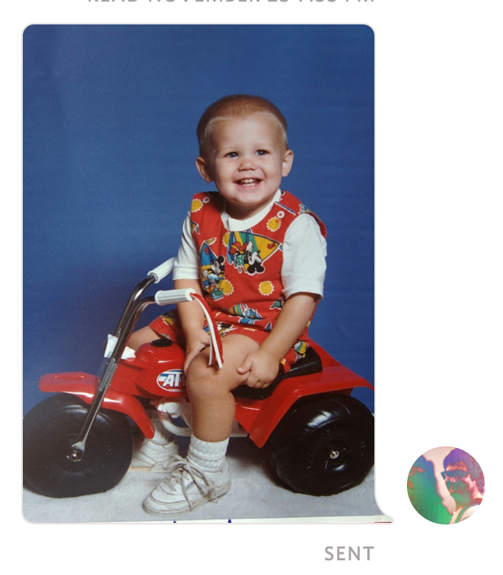
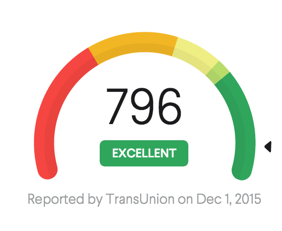

Such
Vector
Goodness
on the web
Sorry some of the links will not work right nowon the web
Sorry some of the links will not work right nowwork at radpad
co-organizer of js.la
jcblw on the web
SVG is a awesome vector image format. Its xml, just like html. Its embbedable inside <img> tags, and can be put inline inside of your HTML.
<!doctype html>
<title>My Sweet HTML Page</title>
<meta charset='utf8' />
<svg
xmlns='http://www.w3.org/2000/svg'
version='1.1'
width='10px'
height='10px'
viewBox='0 0 10 10'
>
<circle cx='5' cy='5' r='5' fill='tomato'/>
</svg>
Its pretty much part of the modern html.
So much of the web now caters to 2x pixel density. SVG's are vector so you do not need to worry about @2x assets.
This is all SVG Markup...
SVG SMIL was pretty promising, allowing the paths of a shape to transform into other shapes.
Chrome 45 deprecated SMIL in favor of CSS animations and Web animations.
adding CSS and Javascript should so the trick.
Ever get bored of squares?
Break out of the box with SVGs
Paths can pretty much make any shape.
<path d="M50.7499982,85.9620254
L51.0742148,86.3046903
L51.0742148,85.6193604
L90.8085903,43.6240453
C90.8085903,43.6240453 113.906247,20.4726566 90.8085905,5.44921906
C69.553639,-8.37566561 53.2207554,13.6895095 50.7499982,17.2981696
C48.279241,13.6895095 31.9463574,-8.37566561 10.6914059,5.44921906
C-12.4062506,20.4726566 10.6914061,43.6240453 10.6914061,43.6240453
L50.4257816,85.6193604
L50.4257816,86.3046903
L50.7499982,85.9620254
L50.7499982,85.9620254 Z">
</path>
Programs that can export svgs
Export setting sometimes will need to change depending on your use case.
Ever want to clip an image with in some text.
Questions?